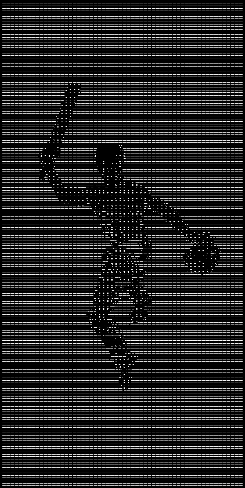

The first entry.
First recorded season. 5/13 against Dread Eleven on 20 August.
Debut yearSince his first recorded season in 2021, Pranav Dwivedi has been all in — 3,289 runs, 118 wickets and three straight titles. The record does the talking.
Fifty-three matches across Test, One Day and T20 cricket. The totals sit beside the format breakdown, not above it.
| Format | M | Runs | Avg | SR | HS | Wkts | Best |
|---|---|---|---|---|---|---|---|
| Test | 10 | 831 | 43.74 | 63.8 | 122* | 29 | 2/34 |
| One Day | 15 | 883 | 73.58 | 94.8 | 102* | 47 | 8/39 |
| T20 | 27 | 1,575 | 60.58 | 244.6 | 216* | 42 | 5/13 |
Career totals: 53 matches · 3,289 runs · 118 wickets.
Six hundreds across three formats, from a 216 made off 56 balls to the Test hundreds that set the pace.
Twenty-two fours. Seventeen sixes. RCB B posted 452/1 and won by 254. It is the innings the rest of the record is measured against.
Career runs deconstructed: 385 × 4 + 160 × 6 = 2,500 boundary runs. Running: 3,289 − 2,500.
From the first recorded season to the third straight title, the years that built the record.
First recorded season. 5/13 against Dread Eleven on 20 August.
Debut year102* and 8/39 in the same ODI against Dread Eleven on 14 September.
Bat & ball122* and 100 against MP B, plus 4/65 against Dread Eleven.
Breakthrough4–1 against Dread Eleven. 107 and 106 against MP B, with 4/90 alongside the second.
Champions5–0 against Dread Eleven. A second straight ABV Memorial title.
Champions3–2 against Dread Eleven. 216* off 56, then 82 and 3/28 in the final.
Champions2021—2026

Team silverware, all-time records and the numbers that sit beside them. Verified against the RDCA and Destroyers CC registries.